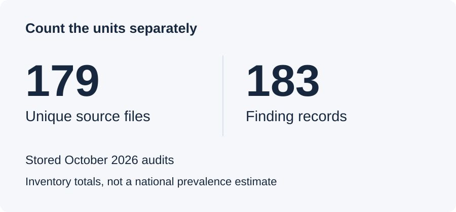

Count files and findings separately

The published hospital-file series contains 179 unique source files and 183 finding records from stored October 2026 audits. Those are different units. A source file can contribute more than one finding record, so treating the finding count as the file count would overstate coverage.
Keep two identifiers in a review inventory: one for the source file and one for each finding attached to it. A finding register can then show several conditions without pretending that the same source was reviewed as a new file each time.
For this series, the 183-to-179 difference is an inventory relationship, not a national prevalence estimate. The source set is not presented as a representative sample of hospitals, and the publication does not establish current endpoint status.
Sources and notes
Source: Historical series index, published November 13, 2026. The graphic repeats that historical inventory's units; it is not a new endpoint check.